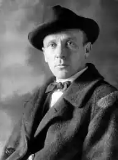
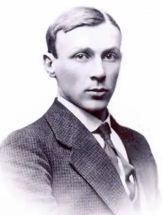
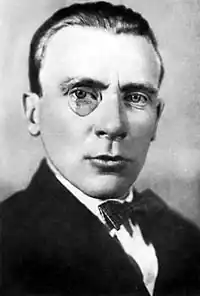
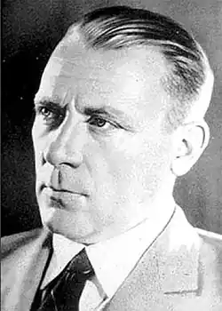

Михайло Опанасович Булгаков (рос. Булгаков Михаил Афанасьевич; 15 травня 1891, Київ — 10 березня 1940, Москва) — російський письменник.
Коріння Булгакова — з Орловщини. Колись Орел входив до складу Київської губернії. Михайло Васильович Покровський, який сам вінчав Варвару з Опанасом Булгаковим (1 липня 1890), й Іван Авраамович Булгаков, народилися 1830 р., обидва були священиками, обидва в один рік (1894) померли. Один із прадідів, батько Анфіси Іванівни Покровської, носив прізвище Турбін.
Сім'я доцента Київської духовної академії Булгакова оселилася на Воздвиженській вулиці, в будинку Матвія Бутовського, священика Хрестовоздвиженської церкви. Михайло Булгаков народився 3 (15) травня 1891 р і був першою дитиною у сім'ї. Два тижні він був "Богданом" (так називали нехрещених немовлят). Опанас Іванович теж був первістком у великій сім'ї (11 дітей), його теж хрестила бабуся. Батько Булгакова помер від тієї ж хвороби, що й згодом його син, — нефросклерозу, в березні. Перше оповідання "Пригоди Світлана" було написане, коли автору виповнилося сім років. Того року в сім'ї з'явився ще один хлопчик — Микола (1898), а до нього — три сестри: Віра (1892), Надія (1893) і Варвара (1895). У 1900 р. народився Іван, а через два роки — Олена (Льоля). Сім'я часто змінювала адреси в пошуках зручніших квартир: Госпітальна, Волоська, Діонісівський провулок, Кудрявська вулиця та інші. На рубежі століть відбулися дві події — Михайло вступив до гімназії і родина придбала дві десятини землі в селищі Буча. Був збудований дім на п'ять кімнат і дві веранди. Сюди часто приїжджали друзі й родичі, знайомі Булгакових. У Бучі був театр, де на сцені виступали Михайло й Віра Булгакови під псевдонімами "Агарін" і "Невєрова". За сценаріями Михайлика розігрувалися домашні інтермедії та вистави. Одне з найбільших захоплень Михайла в юності було ентомологія — збирання метеликів, були там і рідкісні екземпляри. 1919 р. він віддав її Київському університетові. Єдиний власний — у Бучі — будинок згорів у 1918 р. 1906 р. Сім'я Булгакових переїжджає в будинок № 13 по Андріївському узвозу, де пройшли останній період дитинства Михайла Опанасовича. Проте персонажі твору "Біла гвардія" жили на Олексіївському узвозі. До 1919 р. життя Булгакових пов'язане з цим будинком, що змінював власників, але не мешканців другого поверху, родину професора Булгакова. Про діяльність доцента, професора Київської духовної академії Опанаса Булгакова збереглися спогади його колег, друзів, учнів. П'ять років до смерті Опанаса помер його молодший брат Сергій Булгаков. По закінченні гімназії професію лікаря Михайло обрав цілком свідомо. З шести братів матері троє (Василь, Михайло, Микола) були лікарями, а з боку батька лікарем був Ферапонт Булгаков. Другом сім'ї був лікар Іван Воскресенський (за нього через кілька років вийшла заміж Варвара Опанасівна). Булгаков працює у військових госпіталях у Кам'янці-Подільському й Чернівцях, потім, після призову, "ратник ополчення II розряду" одержує призначення до Смоленської губернії. Менш ніж за рік юний лікар амбулаторне прийняв 15361 пацієнта. У березні 1918 р. Булгаков із дружиною повертається до Києва, на Андріївський узвіз, 13. У 1921 р., після двох років роботи в газетах і театрах Грозного і Владикавказа, Булгаков на кілька днів приїжджає до Києва, на Андріївський узвіз, але вже в будинок не № 13, а № 38, до І.Воскресенського, де колись наймав кімнату з молодою дружиною. Булгаков сам поставив собі діагноз. Як лікар, він розумів, що жити йому лишилося недовго. І до останніх днів диктував дружині правки роману "Майстер і Маргарита", який розпочав писати ще у 1928 р. Відомо шість редакцій цього роману. Спершу М. Булгаков хотів написати "роман про диявола. З лютого 1940 р. друзі та родичі постійно чергують біля ліжка Булгакова, який страждає хворобою на нирки. 10 березня 1940 р. Михайло Опанасович Булгаков помер.